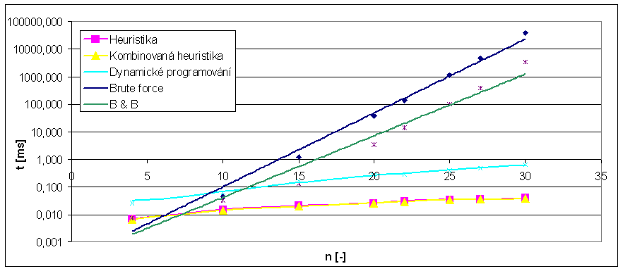
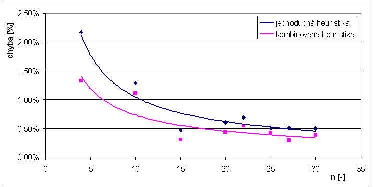
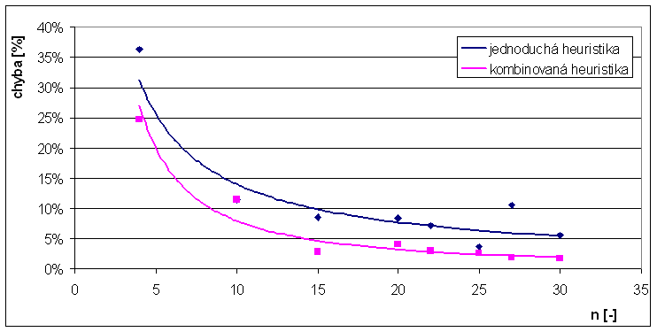

Zad�n�
- Naprogramujte �e�en� 0/1 probl�mu batohu metodou v�tv� a hranic (B&B) tak, aby omezuj�c�m faktorem byla hodnota optimaliza�n�ho krit�ria. Tj. pou�ijte o�ez�v�n� shora (p�ekro�en� kapacity batohu) i zdola (st�vaj�c� �e�en� nem��e b�t lep�� ne� nejlep�� dosud nalezen�)
- Naprogramujte �e�en� 0/1 probl�mu batohu nebo alespo� 0/1 exaktn�ho probl�mu batohu bez cen metodou dynamick�ho programov�n�.
- Naprogramujte �e�en� 0/1 probl�mu batohu heuristikou podle pom�ru cena/hmotnost s testem nejcenn�j�� v�ci.
Definice probl�mu
- Je d�no:
- cel� ��slo n (po�et v�c�)
- cel� ��slo M (kapacita batohu)
- kone�n� mno�ina V={v1, v2, ... ,vn} (hmotnosti v�c�)
- kone�n� mno�ina C={c1, c2, ... ,cn} (ceny v�c�)
- Zkonstruujte mno�inu X={x1, x2, ... ,xn}, kde ka�d� xi je 0 nebo 1, tak, aby
- platilo: v1x1+v2x2 + ... + vnxn <= M (batoh nebyl p�et�en).
- v�raz c1x1+c2x2 + ... + cnxn nab�val maxim�ln� hodnoty pro v�echny takov� mno�iny (cena v�c� v batohu byla maxim�ln�).
Implementace
�lohu jsem implementoval v Jazyce C# jako konzolovou aplikaci. N�zev souboru se vstupn�mi daty je prvn� argument a je povinn�. Druh� argument je nepovinn� a ud�v� po�et opakov�n� v�po�tu jedn� instance (D�le�it� pouze p�i m��en� �asu).Maxim�ln� jsem recykloval �lohu "batoh 1" (virtu�ln� t��da batoh a t��du program, kde je implementov�no m��en� �asu)
- Batoh.cs - Virtu�ln� t��da, m� implementovanou metody pro �ten� vstupn�ho souboru a virtu�ln� metodu Compute().
- Program.cs - Vol� metodu Compute() a m��� �as.
- GreedyProofMod.cs - Kombinovan� heuristika, roz���en� jednoduch� heuristiky (batoh 1) o test nejcenn�j�� v�ci. Naleznu nejcenn�j�� v�c a pokud je jej� cena lep�� ne� v�sledek jednoduch� heuristiky (GreedyProof) ozna��m ji za v�sledek.
- Dyn.cs - Dynamick� programov�n� dekompozic� podle kapacity batohu. (algoritmus pro vypln�n� 2D pole - slide cv.3)
- BB.cs - Metoda v�tv� a hranic. Vych�z� z BruteForce - DFS (batoh 1), kter� je implementov�no rekurzivn� s o�ez�v�n�m nep��pustn�ch stav� (p�ekro�en� kapacity batohu). Je p�id�no o�ez�n� neperspektivn�ch stav� po nalezen� �e�en� (pokud expandov�n�m sou�asn�ho stavu nem��u dostat lep�� �e�en�, ne� kter� je nalezeno, tento stav d�le neexpanduji)
Nam��en� hodnoty a v�sledky
M��il jsem na NTB s procesorem Centino 1.4GHz, nastaven� max Performance p�i nap�jen� z adapt�ru. Pou�it� OS: Windows XP SP2 s .net Framework 2.
Tabulka: Srovn�n� v�po�etn�ch �as�
Proto�e rozli�en� ��ta�e (Environment.TickCount) je 16 ms, je nutn� instance spo��tat v�cekr�t a v�sledn� �as z�skat vyd�len�m po�tem opakov�n�. Po�et opakov�n� jsem nastavoval experiment�ln�, tak aby bylo rozli�en� �asu dostate�n�).
| n | hrub� s�la [ms] | heuristika [ms] | kombinovan� heuristika [ms] | Dynamick� programov�n� [ms] | B&B [ms] |
|---|---|---|---|---|---|
| 4 | 0,008 | 0,007 | 0,007 | 0,027 | 0,007 |
| 10 | 0,044 | 0,015 | 0,014 | 0,063 | 0,033 |
| 15 | 1,230 | 0,021 | 0,020 | 0,168 | 0,13 |
| 20 | 36,87 | 0,027 | 0,026 | 0,268 | 3,43 |
| 22 | 136,74 | 0,030 | 0,030 | 0,292 | 14,24 |
| 25 | 1140,04 | 0,034 | 0,035 | 0,393 | 101,33 |
| 27 | 4803,90 | 0,036 | 0,036 | 0,490 | 400,76 |
| 30 | 38723,10 | 0,041 | 0,039 | 0,626 | 3371,26 |
Tabulka: Pr�m�rn� chyba heuristik
| n | 4 | 10 | 15 | 20 | 22 | 25 | 27 | 30 |
|---|---|---|---|---|---|---|---|---|
| jednoduch� heuristika | 2,17% | 1,29% | 0,48% | 0,60% | 0,69% | 0,50% | 0,50% | 0,49% |
| kombinovan� heuristika | 1,33% | 1,10% | 0,31% | 0,43% | 0,54% | 0,42% | 0,29% | 0,38% |
Tabulka: Maxim�ln� chyba heuristik
| n | 4 | 10 | 15 | 20 | 22 | 25 | 27 | 30 |
|---|---|---|---|---|---|---|---|---|
| jednoduch� heuristika | 36,36% | 11,48% | 8,54% | 8,43% | 7,23% | 3,68% | 10,60% | 5,51% |
| kombinovan� heuristika | 24,75% | 11,48% | 2,77% | 4,08% | 3,02% | 2,59% | 1,85% | 1,75% |
Graf: �asov� z�vislost

Graf: Z�vislost pr�m�rn� chyby na velikosti instance

Graf: Z�vislost maxim�ln� chyby na velikosti instance

Z�v�r
Oproti "jednoduch�m" metod�m �e�en�, pou�it�ch v �loze batoh 1, je z graf� dob�e patrn� velk� sn�en� �asov� n�ro�nosti. Metoda v�tv� a hranic (B&B) p�in�� zlep�en� o jeden ��d oproti DFS. P�itom se jedn� o p�id�n� jedn� podm�nky.
Je�t� mnohem lep��ch v�sledk� dosahuje metoda dynamick�ho programovan�. Sice v porovn�n� s heuristikou (greedyProof) je o ��d pomalej��, ale oproti n� poskytuje v�dy optim�ln� �e�en�. Pouze si mus�me uv�domit pam�ovou slo�itost, kter� je d�na 2D polem, v tomto p��pad� M.n. P�id�n�m testu nejcenn�j�� v�ci do heuristiky se sn�ila pr�m�rn� a maxim�ln� chyba.